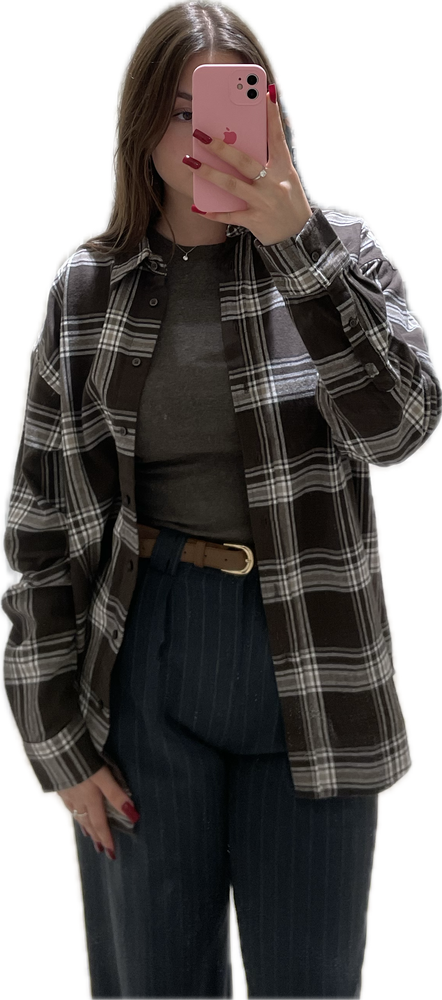

Помогалова Мария


| Обо мне | Интересы | Тип личности | Контакты |
|---|
| Обо мне | Интересы | Тип личности | Контакты |
|---|
Меня зовут Маша! Мне 18 лет. Я окончила школу с серебряной медалью и поступила в Национальный Исследовательский Томский Политехнический Университет. На данный момент я обучаюсь на направление цифровой дизайн и виртуальная реальность.
Я немного неуклюжая. Часто падаю и ударяюсь. В возрасте 8 месяцев сломала руку в двух местах, упав с маленького дивана. Как-то сломала палец на ноге об дверной косяк и праздновала свой день рождения в гипсе. В прошлом году упала в канализационный люк, а потом ходила с огромными синяками.
Я люблю рисовать и создавать что-то своими руками, делаю мыло ручной работы. Занималась 12 лет русскими народными танцами. В детстве увлекалась оригами и скрапбукингом. На данный момент увлекаюсь алмазной мозаикой. Так же люблю готовить. Мое фирменное блюдо - Лазанья.
INFP (Посредник, Лирик). Тип личности INFP в системе Майерс-Бриггс отличается глубоким идеализмом, творчеством и стремлением к внутренней гармонии. Они стремятся к созданию более доброго и понимающего общества, где уважаются ценности и достоинство каждого человека. Развитое чувство собственного достоинства помогает INFP оставаться верными своим убеждениям и ценностям, даже сталкиваясь с препятствиями и вызовами. Они не боятся выступать за то, во что верят, и стремятся делать мир лучше. Борьба за идеалы и общие ценности является центральной частью их личности. INFP часто находят себя в ролях посредников или активистов, стремящихся к социальной справедливости.